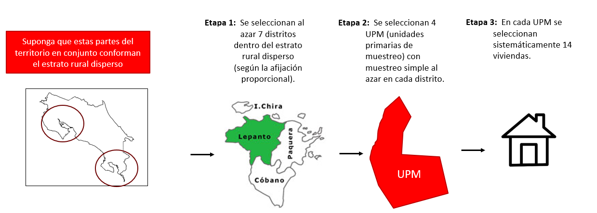

[1] 28[1] 12 40 68 96 124 152[XS-1130 Principios de Inferencia]
Del muestreo simple al azar ya conocemos la selección, los estimadores y el cálculo del tamaño de muestra. Ahora veremos cuatro diseños más:
Importante
En todos ellos la estimación puntual sigue siendo un promedio (ponderado o no). Lo que cambia es cómo se selecciona y cómo se calcula el error estándar.
En esta presentación indicaremos las fórmulas del promedio y de la varianza de cada diseño sin deducirlas: lo importante es saber cuál corresponde a cada caso.
“Se selecciona un punto aleatorio de inicio y posteriormente se elige cada \(k\)-ésimo miembro de la población.”
Procedimiento
Nota
Las fórmulas del tamaño de muestra son las mismas que las del MSA. Lo único que cambia es la forma en que seleccionamos a las unidades.
Si \(k\) es entero, la selección es sencilla. Si \(k\) tiene decimales el procedimiento se vuelve algo más tedioso, pero sigue siendo directo.
Solo para referencia
Como todas las unidades tienen la misma probabilidad de salir (\(\pi_k = n/N\)), se utiliza el mismo estimador del MSA:
\[\bar{y}_{sis} = \frac{1}{n}\sum_{i \in s} y_i\]
Y la varianza se aproxima con la del MSA:
\[\widehat{\operatorname{Var}}(\bar{y}_{sis}) \approx \frac{s^2}{n}\left(1-\frac{n}{N}\right)\]
Importante
Decimos “se aproxima” porque solo existen \(k\) muestras posibles y las unidades seleccionadas no son independientes. La aproximación funciona bien cuando la lista está en orden aleatorio respecto a la variable de interés.
Ejemplo. Una empresa tiene 1 400 clientes y, tras los cálculos correspondientes, el tamaño de muestra resultó ser de 50 clientes.
Paso 1. Calcular el salto:
\[k = \frac{N}{n} = \frac{1400}{50} = 28\]
Paso 2. Escoger un número aleatorio entre 1 y 28. Suponga que salió el 12 (el arranque).
Paso 3. Sumar el salto sucesivamente:
| Elemento | 1 (Arranque) | 2 | 3 | 4 | \(\cdots\) | 49 | 50 |
|---|---|---|---|---|---|---|---|
| Unidad | 12 | 40 | 68 | 96 | \(\cdots\) | 1356 | 1384 |
\(\small 40 = 12 + 28 \qquad 68 = 40 + 28 \qquad 96 = 68 + 28 \qquad \dots \qquad 1384 = 1356 + 28\)
[1] 28[1] 12 40 68 96 124 152[1] 25 [1] 25 53 81 109 137 165 193 221 249 277 305 333 361 389 417
[16] 445 473 501 529 557 585 613 641 669 697 725 753 781 809 837
[31] 865 893 921 949 977 1005 1033 1061 1089 1117 1145 1173 1201 1229 1257
[46] 1285 1313 1341 1369 1397Ejemplo. Misma población de 1 400 clientes, pero ahora el tamaño de muestra resultó ser de 32 clientes.
\[k = \frac{1400}{32} = 43.75\]
Procedimiento con decimales
| \(n\) | Iteración | Resultado | \(/100\) | Truncado |
|---|---|---|---|---|
| 1 | 3266 | 3266 | 32.66 | 32 |
| 2 | 3266 + 4375 | 7641 | 76.41 | 76 |
| 3 | 7641 + 4375 | 12016 | 120.16 | 120 |
| 4 | 12016 + 4375 | 16391 | 163.91 | 163 |
| \(\vdots\) | \(\vdots\) | \(\vdots\) | \(\vdots\) | \(\vdots\) |
| 32 | 134516 + 4375 | 138891 | 1388.91 | 1388 |
N <- 1400;
n <- 32
k100 <- (N/n) * 100 # 4375
r <- 3266 # arranque del ejemplo
#en la práctica el arranque se escoge de manera aleatoria
lista <- seq(from = r, by = k100, length.out = n)
unidades <- trunc(lista/100) # dividir y truncar
data.frame(iteracion = 1:n, resultado = lista,
entre_100 = lista/100, truncado = unidades)[1:10,] #primeros 10 elementos iteracion resultado entre_100 truncado
1 1 3266 32.66 32
2 2 7641 76.41 76
3 3 12016 120.16 120
4 4 16391 163.91 163
5 5 20766 207.66 207
6 6 25141 251.41 251
7 7 29516 295.16 295
8 8 33891 338.91 338
9 9 38266 382.66 382
10 10 42641 426.41 426Nota
El arranque se sortea entre 100 y 4 375 porque al dividir entre 100 debe caer dentro del intervalo \([1, k]\). Un valor menor a 100 daría la unidad 0, que no existe en el marco.
Importante
El orden de la lista deja de ser un detalle administrativo y pasa a ser parte del diseño.
El caso clásico: un padrón ordenado por vivienda donde aparecen primero el esposo y luego la esposa. Si el salto \(k\) es par, la muestra quedará compuesta solo por hombres o solo por mujeres.
Tres escenarios
Recomendación: Siempre es una buena práctica revisar el orden del marco antes de aplicar el diseño y, ante la duda, desordénelo aleatoriamente.
Ventajas
Puede usarse cuando no se tiene una lista de los elementos: por ejemplo, escoger el tercero de cada cuatro clientes que llegan a un café.
Produce una muestra proporcional a la población y con cobertura uniforme de toda la lista.
Selección más rápida y sencilla que el MSA: basta un número aleatorio.
Desventajas
Las unidades seleccionadas no son independientes: con solo conocer el arranque y el espaciamiento se conoce toda la lista.
Puede producir sesgos de selección si la población está ordenada bajo algún patrón.
No existe fórmula insesgada para la varianza; se aproxima con la del MSA.
Cuando una población se divide en grupos a partir de ciertas características, se aplica el muestreo aleatorio estratificado con el fin de garantizar que cada grupo se encuentre representado en la muestra. A los grupos también se les denomina estratos. \(\small \text{(Lind y Marchal, 2012, p. 269)}\)
Procedimiento
Con \(N_h\) el tamaño del estrato \(h\), el peso del estrato es \(W_h = N_h/N\), y se cumple \(\sum_h W_h = 1\).
Solo para referencia
La media estratificada es un promedio ponderado de los promedios de cada estrato:
\[\bar{y}_{st} = \sum_{h=1}^{H} W_h\,\bar{y}_h = \frac{N_1\bar{y}_1 + N_2\bar{y}_2 + \dots + N_H\bar{y}_H}{N}\]
Y su varianza suma lo que aporta cada estrato:
\[\widehat{\operatorname{Var}}(\bar{y}_{st}) = \sum_{h=1}^{H} W_h^2\;\frac{s_h^2}{n_h}\left(1-\frac{n_h}{N_h}\right)\]
Importante
Ponderar no es opcional. Si se calcula la media simple de todos los datos sin usar los \(W_h\), el estimador queda sesgado, salvo que la afijación haya sido exactamente proporcional.
Afijación proporcional
La muestra corresponde proporcionalmente al tamaño del estrato en la población:
\[n_h = n\,\frac{N_h}{N} = n\,W_h\]
Solo requiere conocer los tamaños \(N_h\).
Afijación óptima (de Neyman)
Además del tamaño, considera la variabilidad dentro de cada estrato:
\[n_h = n\,\frac{N_h\,\sigma_h}{\sum_{l} N_l\,\sigma_l}\]
Requiere conocer o estimar los \(\sigma_h\).
Nota
Si todos los estratos tuvieran la misma variabilidad, ambas afijaciones darían exactamente el mismo resultado.
Ejemplo. Una empresa tiene 370 empleados repartidos en siete departamentos. Se desea seleccionar una muestra de 50 empleados.
| Departamento | \(N_h\) | \(W_h\) | \(n_h = 50\,W_h\) |
|---|---|---|---|
| Gerencia | 65 | 17.57% = (65/370) | 9 = (17.57%*50) |
| Recursos Humanos | 49 | 13.24% | 7 |
| Cuentas por pagar | 59 | 15.95% | 8 |
| Cuentas por cobrar | 60 | 16.22% | 8 |
| Auditoría | 53 | 14.32% | 7 |
| Producción | 22 | 5.95% | 3 |
| Publicidad | 62 | 16.76% | 8 |
| TOTAL | 370 | 100% | 50 |
\(\small \text{Por ejemplo: } 50 \times 17.57\% = 8.78 \approx 9 \text{ empleados de Gerencia.}\)
Importante
Para que la muestra global sea exacta, conviene usar el redondeo al más próximo. Lo habitual en otros contextos es redondear hacia arriba, pero entonces la suma de los \(n_h\) supera a \(n\).
Si tras redondear la suma no coincide con \(n\), se ajusta una unidad en el estrato más grande.
depto Nh Wh nh
1 Gerencia 65 17.57 9
2 Recursos Humanos 49 13.24 7
3 Cuentas por pagar 59 15.95 8
4 Cuentas por cobrar 60 16.22 8
5 Auditoría 53 14.32 7
6 Producción 22 5.95 3
7 Publicidad 62 16.76 8[1] 0.14 0.14 0.14 0.13 0.13 0.14 0.13[1] 0.14Nota
Con afijación proporcional todas las unidades tienen la misma probabilidad de ser seleccionadas, igual que en el MSA. Por eso los pesos son constantes y el análisis posterior se simplifica.
Las pequeñas diferencias que se observan se deben únicamente al redondeo de los \(n_h\).
Ejemplo. Una universidad está conformada por tres estratos: profesores, estudiantes y funcionarios administrativos, con \(N_1 = 2\,000\), \(N_2 = 20\,000\) y \(N_3 = 3\,000\). Se necesita asignar una muestra de \(n = 512\). La variabilidad de la variable de interés es 10, 19 y 25 respectivamente.
| Estrato | \(h\) | \(N_h\) | \(\sigma_h\) | \(N_h \sigma_h\) | % | \(n_h\) |
|---|---|---|---|---|---|---|
| Profesores | 1 | 2 000 | 10 | 20 000 | 4% | 22 |
| Estudiantes | 2 | 20 000 | 19 | 380 000 | 80% | 410 |
| Funcionarios | 3 | 3 000 | 25 | 75 000 | 16% | 81 |
| Total | 25 000 | 475 000 | 100% | 512 |
\(\small 512 \times \dfrac{20\,000}{475\,000} = 512 \times 4.21\% = 21.6 \approx 22 \text{ profesores.}\)
estrato Nh sh Nh_sh pct nh_opt
1 Profesores 2000 10 20000 4.21 22
2 Estudiantes 20000 19 380000 80.00 410
3 Funcionarios 3000 25 75000 15.79 81[1] 513Importante
La suma da 513 y no 512: el redondeo agregó una unidad. En la práctica se resta esa unidad al estrato más grande (Estudiantes quedaría en 409).
estrato Nh sh proporcional óptima diferencia
1 Profesores 2000 10 41 22 -19
2 Estudiantes 20000 19 410 410 0
3 Funcionarios 3000 25 61 81 20Nota
Profesores pierde 19 unidades y Funcionarios gana 20. La razón es la variabilidad: con \(\sigma = 10\) los profesores son muy homogéneos y pocas unidades bastan para estimarlos bien; con \(\sigma = 25\) los funcionarios son el grupo más disperso y necesitan más muestra.
Estudiantes no cambia porque su peso por tamaño (80%) coincide con su peso por tamaño y variabilidad.
Ventajas
Tiende a asegurar que la muestra represente adecuadamente a la población en función de las variables seleccionadas.
Se obtienen estimaciones más precisas que con el MSA.
Permite obtener estimaciones por estrato, no solo globales.
Consigue una muestra lo más semejante posible a la población en cuanto a los estratos de interés.
Desventajas
Se debe conocer la distribución en la población de las variables utilizadas para estratificar.
La afijación óptima exige además conocer o estimar los \(\sigma_h\).
Es más complejo y costoso de implementar que el MSA.
Unidades mal clasificadas o presentes en dos estratos rompen el diseño.
Usos típicos
Garantizar subgrupos pequeños: si el 0.2% de la población son doctorados, el MSA puede dejarlos fuera; la estratificación los asegura.
Dar resultados por dominio: cuando se requieren estimaciones separadas por provincia, por sede o por tipo de empresa.
Usar distintos métodos de recolección: teléfono para unos estratos, visita presencial para otros.
Ganar precisión cuando la variable de interés difiere mucho entre grupos: ingreso por zona, producción por tamaño de finca.
En lugar de seleccionar elementos, se seleccionan grupos completos de elementos llamados conglomerados, definidos casi siempre por límites naturales o geográficos.
Procedimiento
Importante
La idea clave: lo ideal es que cada conglomerado sea una representación, a pequeña escala, de la población. Si todos los conglomerados se parecen entre sí, basta tomar unos pocos para obtener una buena estimación.
Es exactamente lo contrario de los estratos.
Solo para referencia
Con conglomerados de tamaño aproximadamente igual, siendo \(\bar{y}_i\) la media del conglomerado \(i\):
\[\bar{y}_{cong} = \frac{1}{m}\sum_{i \in s} \bar{y}_i\]
\[\widehat{\operatorname{Var}}(\bar{y}_{cong}) = \frac{s_b^2}{m}\left(1-\frac{m}{M}\right)\]
donde \(s_b^2\) es la varianza entre las medias de los conglomerados seleccionados.
Importante
La varianza depende de \(m\), el número de conglomerados, no del número total de elementos observados. Por eso se recomienda seleccionar 20 conglomerados o más.
La distinción más importante
| Estratificado | Conglomerados | |
|---|---|---|
| Se muestrea | dentro de cada grupo | entre los grupos |
| Grupos en la muestra | todos | algunos |
| Composición ideal | homogéneos por dentro | heterogéneos por dentro |
| Cada grupo es | una población pequeña | una “miniatura” de la población |
| Efecto en la precisión | la aumenta | la reduce |
| Efecto en el costo | lo mantiene o aumenta | lo reduce mucho |
\(\small \text{Se estratifica por razones de PRECISIÓN; se conglomera por razones de COSTO.}\)
Ejemplo. Un distrito tiene \(M = 6\) barrios con 5 viviendas cada uno. Se registra el número de personas por vivienda:
| Barrio | Viviendas | Total | \(\bar{y}_i\) |
|---|---|---|---|
| 1 | 2, 3, 2, 3, 2 | 12 | 2.4 |
| 2 | 5, 6, 5, 4, 5 | 25 | 5.0 |
| 3 | 3, 2, 3, 4, 3 | 15 | 3.0 |
| 4 | 7, 8, 7, 6, 7 | 35 | 7.0 |
| 5 | 4, 5, 4, 3, 4 | 20 | 4.0 |
| 6 | 6, 5, 6, 7, 6 | 30 | 6.0 |
\(N = 30\) viviendas y \(\bar{Y} = 137/30 = 4.57\) personas.
Si se seleccionan los barrios 2 y 5: \(\;\bar{y}_{cong} = \frac{5.0 + 4.0}{2} = 4.5\;\)
Ventajas
Muy eficiente cuando la población es grande y dispersa.
No requiere un marco de todas las unidades: basta el listado de conglomerados, y solo se listan los seleccionados.
El estudio de unidades que están juntas es logísticamente mucho más fácil y barato.
Los conglomerados suelen existir de forma natural: viviendas, grupos de clase, bloques, aviones.
Desventajas
Es menos preciso que el muestreo simple al azar suponiendo un mismo tamaño de muestra.
El cálculo del error estándar es más complejo.
Conglomerados de tamaño desigual complican los estimadores.
Se necesitan muchos conglomerados (20 o más) para que la estimación sea estable.
En la práctica casi nunca se observan todos los elementos del conglomerado: se toma una submuestra dentro de él. Eso da lugar al muestreo bietápico y, en general, polietápico.
Cómo funciona
Nota
Cada etapa puede usar un diseño distinto: MSA en una, sistemático en otra, estratificación por encima de todo. A esa combinación se le llama muestreo complejo, y es el diseño real de prácticamente todas las encuestas nacionales.
Solo para referencia
La probabilidad de que una unidad final entre en la muestra es el producto de las probabilidades de cada etapa:
\[\pi_k = \pi^{(1)} \times \pi^{(2)} \times \pi^{(3)} \times \cdots\]
y el peso de muestreo es su inverso, \(w_k = 1/\pi_k\).
Importante
Cuando ese producto da el mismo valor para todas las unidades, el diseño se llama autoponderado: todos los pesos son iguales y el análisis se simplifica mucho. Los institutos de estadística diseñan sus encuestas buscando precisamente esa propiedad.
Ejemplo. Una encuesta nacional define el estrato rural disperso y aplica el siguiente diseño:
Diseño
¿Cuántas viviendas se seleccionan en este estrato?
\[7 \times 4 \times 14 = 392 \text{ viviendas}\]
¿Cómo se llama este tipo de muestreo? Polietápico (de tres o más etapas).

Muestreo por Etapas
Si se tienen cuatro estratos (Urbano Central, Urbano Costero, Rural Central, Rural Costero ) y se seleccionan 28, 15, 11 y 7 distritos respectivamente mediante afijación proporcional, y luego se aplica el mismo esquema. ¿Cuántas viviendas se tendrían que seleccionarían?
\[(28 + 15 + 11 + 7) \times 4 \times 14 = 61 \times 56 = 3\,416 \text{ viviendas}\]
Ventajas
No requiere un marco completo desde el inicio: se construye por etapas, solo donde hace falta.
Reduce mucho el costo de campo al concentrar geográficamente el trabajo.
Permite combinar diseños: estratificar arriba, conglomerar en el medio, sistematizar abajo.
Puede diseñarse para que resulte autoponderado.
Desventajas
Se requiere un marco muestral en cada etapa.
El error estándar es mayor que con MSA y su cálculo es considerablemente más complejo.
Exige mayor planificación y control del trabajo de campo.
El análisis debe incorporar el diseño: ignorarlo subestima los errores estándar.
| Diseño | Media muestral | Varianza estimada |
|---|---|---|
| Simple al azar | \(\bar{y}_s = \frac{1}{n}\sum y_i\) | \(\frac{s^2}{n}\left(1-\frac{n}{N}\right)\) |
| Sistemático | \(\bar{y}_{sis} = \frac{1}{n}\sum y_i\) | Se aproxima con la del MSA |
| Estratificado | \(\bar{y}_{st} = \sum_h W_h \bar{y}_h\) | \(\sum_h W_h^2 \frac{s_h^2}{n_h}\left(1-\frac{n_h}{N_h}\right)\) |
| Conglomerados | \(\bar{y}_{cong} = \frac{1}{m}\sum_i \bar{y}_i\) | \(\frac{s_b^2}{m}\left(1-\frac{m}{M}\right)\) |
| Varias etapas | Promedio ponderado por \(w_k = 1/\pi_k\) | Combina las etapas |
Importante
La estimación puntual es siempre un promedio. Lo que cambia por completo es la fórmula del error estándar.
Aplicar la fórmula del MSA a una muestra por conglomerados subestima el error estándar: se concluye con más seguridad de la que los datos permiten.
Preguntas guía
¿Existe un marco completo de las unidades? Si no, piense en conglomerados o en varias etapas.
¿Necesita resultados por subgrupo? Entonces estratifique.
¿Las unidades están dispersas geográficamente? El costo de campo empuja hacia conglomerados.
¿La lista tiene algún orden útil o peligroso? Eso decide si el sistemático ayuda o perjudica.
¿Conoce la variabilidad dentro de cada grupo? Solo entonces puede usar afijación óptima.
\(\small \text{En la práctica casi ninguna encuesta usa un solo diseño: se combinan según el marco disponible y el presupuesto.}\)
Sistemático con salto entero. Una empresa de servicios tiene 2 400 clientes y desea una muestra de 60.
set.seed(2026) para sortear el arranque.Sistemático con salto fraccionario. Un archivo contiene 1 850 expedientes y se desea una muestra de 40.
Afijación proporcional. Se quiere hacer un estudio de las tres universidades públicas con más estudiantes del país (UCR, UNA y TEC) para conocer la percepción sobre las decisiones que ha tomado CONARE en el último año. Se desea obtener estimaciones por cada universidad y se requiere una muestra de 300 estudiantes. Se sabe que en el TEC se encuentra una quinta parte de la población y en la UNA una tercera parte.
Afijación proporcional y óptima. En un residencial construido en cuatro etapas, que actualmente consta de 10 000 habitantes, se quiere analizar la edad de los habitantes de cada etapa. La administración realizó una encuesta a una muestra estratificada de 500 personas. Se sabe que la etapa I tiene 1 000 habitantes, la etapa III tiene 2 000 y los habitantes de la etapa IV representan el 40% del total.
Conglomerados. Un distrito tiene \(M = 8\) condominios con 6 viviendas cada uno. El número de personas por vivienda es:
| Condominio | Viviendas |
|---|---|
| 1 | 2, 3, 2, 3, 2, 4 |
| 2 | 5, 6, 5, 4, 5, 5 |
| 3 | 3, 2, 3, 4, 3, 3 |
| 4 | 7, 8, 7, 6, 7, 7 |
| 5 | 4, 5, 4, 3, 4, 4 |
| 6 | 6, 5, 6, 7, 6, 6 |
| 7 | 2, 2, 3, 2, 3, 2 |
| 8 | 8, 7, 8, 9, 8, 8 |
Muestreo en varias etapas. Una encuesta nacional aplica en el estrato rural disperso el siguiente diseño: en la etapa 1 se seleccionan 7 distritos; en la etapa 2, 4 UPM por distrito mediante MSA; y en la etapa 3, 14 viviendas por UPM mediante muestreo sistemático.
Conceptos.
Parte A. Falso o verdadero. Indique si cada afirmación es falsa o verdadera y justifique en una o dos líneas.
Parte B. Respuesta corta.
Utilice R. Utilice los conjuntos de datos que vienen instalados con R.
Parte A. Estratificado con iris (150 flores, 3 especies de 50).
Sepal.Length y la media de cada especie.Parte B. Sistemático con quakes (1 000 sismos).
mag. Determine \(k\) para \(n = 50\), sortee el arranque y estime la media.mag y repita el inciso f. ¿Qué cambió y por qué?Parte C. Conglomerados con ChickWeight.
Chick) como un conglomerado. ¿Cuántos conglomerados hay y de qué tamaño?